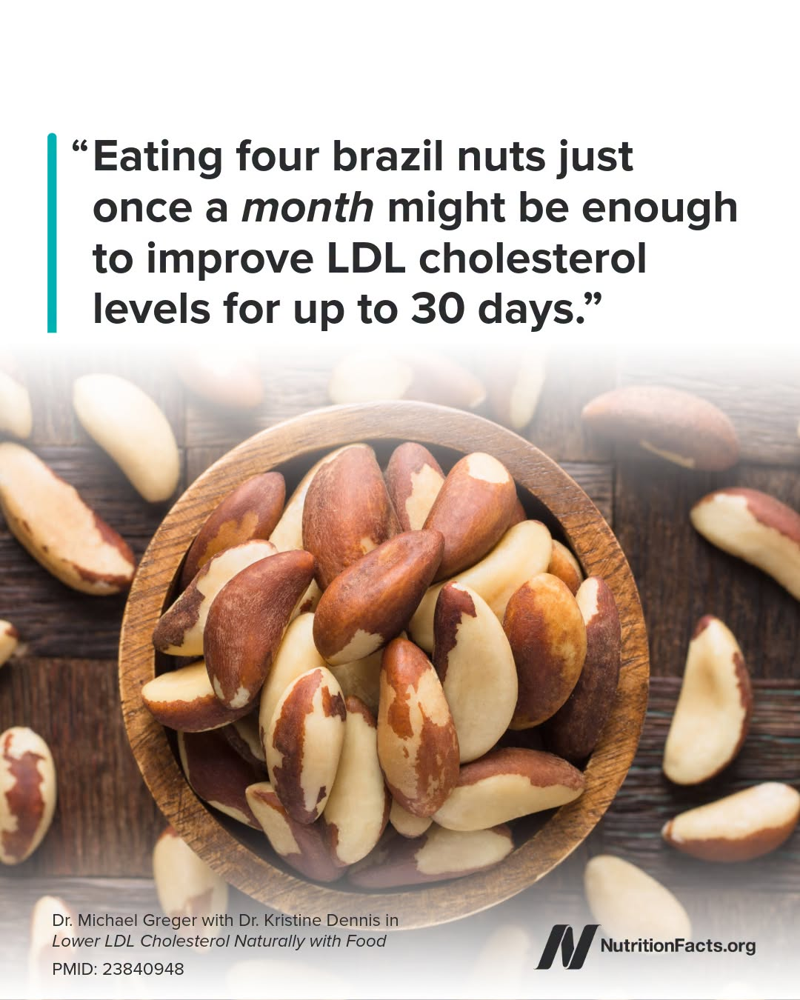

Has anyone actually tried this? Did it lower your LDL?
There is a small study which suggests that it works: A single consumption of high amounts of the Brazil nuts improves lipid profile of… (J Nutr Metab, 2013).
The poster asks whether anyone has tried eating Brazil nuts to lower LDL and points to a small study suggesting a single large intake improved lipid profile in healthy volunteers. The shared text says four Brazil nuts once a month may improve LDL for up to 30 days, while daily intake risks selenium toxicity.
Has anyone actually tried this? Did it lower your LDL?
There is a small study which suggests that it works: A single consumption of high amounts of the Brazil nuts improves lipid profile of… (J Nutr Metab, 2013).
Just four brazil nuts a month may improve LDL cholesterol for up to 30 days. Not four brazil nuts once a day, but four brazil nuts once a month. Eating four every day may risk selenium toxicity. see.nf/portfolio


A Washington Post interview with Harvard nutrition researcher Walter Willett. He says his group's data showed total fat was irrelevant, trans fats were bad, saturated fat versus refined carbohydrate was only weakly related to heart disease, and unsaturated fats were linked to lower heart disease and mortality. He also describes his own diet, including oats, nuts, blueberries and a plant-based lunch.
Louis lists six strategies shown to reverse plaque in human RCTs: major weight loss, Mediterranean/DASH diet, LDL-lowering drugs (statins, PCSK9 inhibitors, ezetimibe), colchicine, exercise and high-dose EPA fish oil. He would like to see a trial combining all of them.

Louis shares a graph of foods' LDL effects serving-for-serving against a typical Western diet baseline, e.g. almonds lower LDL and sugar raises it. Excess calories raise LDL regardless.

Louis shares an American Heart Association post noting that unsaturated fats found in avocado, fish and nuts can help lower LDL and triglycerides. It is a brief public-health message without study detail.
Louis lists strategies with RCT evidence for plaque regression: major weight loss, a Mediterranean or DASH diet, LDL-lowering drugs, colchicine, exercise and high-dose EPA. He notes six RCTs show diet can regress plaque and that Ornish's results resembled PREDIMED and CORDIOPREV, while Esselstyn's data are not from RCTs.

Personal anecdote about eating large amounts of roasted sesame seeds as a snack and carb replacement; the admin considers nuts and seeds among the healthiest foods. No evidence cited.